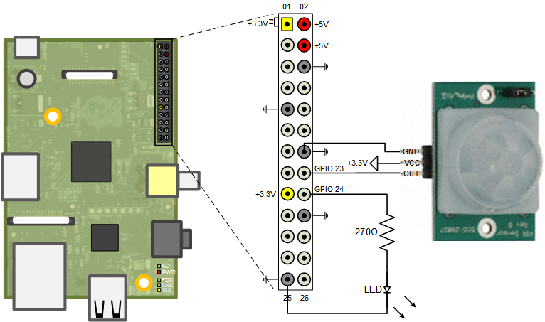
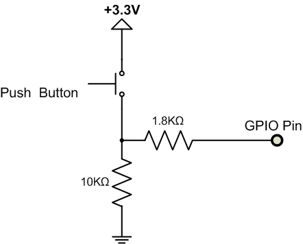

Motion Sensor
This example shows how to use Raspberry Pi® hardware to interface to a motion sensor and control an external LED.
Contents
Introduction
In this example you will learn how to create a Simulink® model that reads the output of a motion sensor and performs a series of actions based on the detected motion activity. For this example, we will be using a Passive Infra-Red (PIR) motion sensor from Parallax® Inc. The PIR Sensor is a pyroelectric device that measures changes in infrared heat levels emitted by surrounding objects. When an object, such as a person, passes in front of the PIR sensor, outputs a logic HIGH on its output pin. If no motion is detected, the sensor sets the output pin to logic LOW.
Prerequisites
- We recommend completing Getting Started with Raspberry Pi® Hardware example.
Required Hardware
To run this example you will need the following hardware:
- Raspberry Pi board
- PIR motion sensor from Parallax
- 1.8mm Red LED
- 270 Ohm resistor
- Breadboard wires (recommended)
- Small breadboard (recommended)
- Speakers or headphones (Task 3)
- A USB web camera (Task 4)
Task 1 - Connect the Motion Sensor and the LED to Raspberry Pi Hardware
In this task, you will connect the PIR motion sensor and a red LED to the Raspberry Pi hardware. The sensor has three pins: VCC, GND, and OUT. The VCC pin will be connected to +3.3 Volt voltage rail and the GND pin is connected to the ground. The OUT pin is the logic signal indicating motion. This pin will be connected to a GPIO pin on the Raspberry Pi hardware as shown in the following schematic:

In the circuit schematic above, an LED has been connected to a GPIO pin. This LED will turn on whenever motion is detected. Note that the forward voltage of the LED used must be smaller than 3.3 Volts. We recommend using a 1.8mm red LED.
1. Interface the PIR motion sensor to the Raspberry Pi hardware as shown in the circuit diagram above.
2. Connect a red LED to the indicated GPIO pin of the Raspberry Pi hardware as shown in the circuit diagram above.
NOTE If you do not have the PIR motion sensor available, you can substitute a simple push button, as shown in the simplified circuit diagram below.

Task 2 - Turn on LED when Motion is Detected
In this task you will turn on the LED connected to the board when motion is detected by the PIR sensor.
1. Open the Motion Sensor (Turn on LED) model.
2. Notice the GPIO Read and the GPIO Write blocks. The GPIO Read block reads the output of the motion sensor every 0.1 second. The value read from the motion sensor is written back to the GPIO pin supplying power to the LED.
3. In your Simulink model, make sure that the Simulation mode on the toolbar is set to External. Then, click the Run button on the toolbar to run the model on the Raspberry Pi hardware.
4. When the model starts running on the Raspberry Pi hardware, double click on the Motion Sensor Output block. This block is a Simulink scope that shows output of the motion sensor.
5. Click Stop button to stop the model.
Task 3 - Say "Motion Detected" when Sensor Output is High
The firmware available for Raspberry Pi hardware includes eSpeak text to speech synthesizer. In this task you will use the eSpeak Linux package to output "Motion Detected" when sensor OUT pin goes high.
1. If you are using the analog audio output of the Raspberry Pi board, Connect a pair of headphones or speakers to the analog audio output jack. If you connected your Raspberry Pi to an HDMI monitor or TV, you will hear the audio from the speakers of your display device.
2. Open the Motion Sensor (Text to Speech) model.
3. In your Simulink model, make sure that the Simulation mode on the toolbar is set to External. Then, click the Run button on the toolbar to run the model on the Raspberry Pi hardware.
4. When the model starts running you will hear your Raspberry Pi hardware speak "Motion Detected" whenever the PIR sensor detects motion.
5. Click Stop button to stop the model.
Task 4 - Build a Motion Sensor Camera
In this task you will create a Simulink model that captures a picture and saves it on board when motion is detected.
1. Connect a compatible USB camera to the Raspberry Pi hardware.
2. Open the Motion Sensor Camera model.
3. In your Simulink model, make sure that the Simulation mode on the toolbar is set to External. Then, click the Run button on the toolbar to run the model on the Raspberry Pi hardware.
4. A gray scale image will be captured and saved on the Raspberry Pi hardware every time the sensor motion pin goes from low to high. The captured frame is displayed on the host computer while the model is running in external mode. The captured image data is saved to a file in the user's home directory on the board. To retrieve the first captured image, execute the following on the MATLAB® command line:
r = raspberrypi;
getFile(r,'/img0.dat')
img = load('img0.dat');
imagesc(reshape(img,120,160)), colormap(gray)5. Click Stop button to stop the model.
6. You can deploy a stand-alone version of this Simulink model by clicking the Deploy To Hardware button on the model toolbar. When you run the model in this way, the Simulink model running on the Raspberry Pi hardware will record images to the SD card. You should stop the model after it runs for some period of time and retrieve the recorder images later as shown in Step 4 above. To stop the model running detached from Simulink, execute the following on the MATLAB command line:
r = raspberrypi; stopModel(r,'raspberrypi_motion_sensor_camera')
Other Things to Try
Experiment with other blocks in the Raspberry Pi and Simulink block library. For example:
- Use LED block to turn on an on-board LED when motion is detected.
- Use Counter Limited block from Simulink library instead of Counter Free-Running to limit the number of image files to 255, for example.
Summary
This example showed you how to use the Raspberry Pi target to connect an external motion sensor and an LED to the board. In this example you learned that:
- GPIO Read block lets you read digital logic levels output by an external device.
- GPIO Write block lets you output logic high or low values to control external devices.
- LED block lets you to turn an on-board LED on or off.
- eSpeak Text to Speech block lets you synthesize speech.